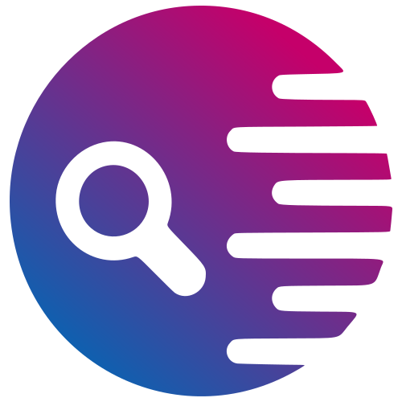
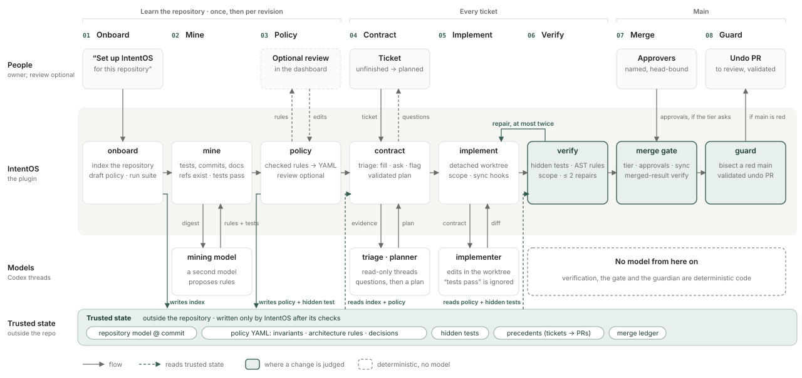

Parallel development
Agents and engineers duplicate work, miss each other’s decisions, and produce changes that no longer fit together.
Where this started
All three work at VC-backed startups with fewer than 10 engineers, trying to move fast.

BevelParaphrased
“We have agents working in parallel, with over 50 PRs open at any given time. Reviewing them and keeping our understanding of the codebase up to date takes a lot of time.”
CTO · Bevel
Paraphrased
“A green test suite isn’t enough for us. We still need to know whether a change follows the healthcare rules our patients depend on.”
CTO · Neru Health
Paraphrased
“With several agents working in parallel, the review work piles up. We spend a lot of time understanding and checking what they’ve changed.”
CTO · Spherecast
The shared problem
Agents and engineers duplicate work, miss each other’s decisions, and produce changes that no longer fit together.
The business pivots. Old assumptions remain in code and tests, so green tests can still confirm outdated behavior.

New requests arrive before the team has agreed what should change.
Full size ↗
An unclear ticket leaves the agent, then the reviewer, to fill in the gaps.
Full size ↗
Parallel changes leave reviewers catching up on what changed and how it fits together.
Full size ↗
A missed problem can turn review work into recovery work.
Full size ↗The solution principle
Give agents and reviewers a shared, current understanding of what should change, what must keep working, and how to check both.
Parallel development
Changing business requirements
The review bottleneck
What we built / How it works
IntentOS gathers rules from history, tests, and docs; clarifies the ticket; keeps agents aligned with main; and independently verifies the implementation and merged result, recording findings for review.

One concrete example · Recorded evaluation
TicketValidate building inputs at creation.
Rule to preserveValid inputs must produce the same heat profile.
Project tests passed. The shared verifier then required a repair.
Rules supplied before implementation. Project and acceptance tests passed.
Deployment decisions
For a small team already using Codex, with private repositories and no GitHub Enterprise.
| Requirement | Why it matters to a startup CTO | Decision | Tradeoff |
|---|---|---|---|
| Coordinate without requiring GitHub Enterprise. | GitHub’s native merge queue for private repositories requires Enterprise Cloud. The target team needs coordination without that upgrade. |
Use local hooks and a local merge gate. Agents use main to discover each other’s merged changes. |
Unmerged work is invisible to coordination. The current prototype works across worktrees in one local repository. |
| Start with one repository in the existing Codex workflow. | The CTO can pilot it with one engineer before rolling it out to the team. |
Ship a Codex plugin. MCP tools and setup skills connect IntentOS to an existing Codex installation. |
Each machine needs a local install. Live implementation and coordination currently use Codex. |
| Run without provisioning a backend or database service. | A team without platform support can start the pilot on a developer’s machine. |
Run locally; store state in SQLite and files. IntentOS has no hosted backend; model calls still go through Codex. |
Runs use local CPU and disk. The team manages setup, updates, and backups, and the machine must stay available during a run. |
Evidence
| Cause | How we track it | Result |
|---|---|---|
| Parallel developmentChanges pass alone but break when combined. | Test the merged code. Count runs finishing with main healthy, including recovery. |
3/15 → 15/15
runs finished with main healthy 9 clashes caught before merge; 3 failures recovered after main broke. How we tested this |
| Changing business requirementsOld assumptions remain in code and tests. | Check changes against explicit business rules, beyond the project’s own tests. |
Observed examples · demandlib
Energy factors · T11 Regional holidays · T05 In-domain error wording · T09 |
The takeaway
A change with its purpose, checks, and unresolved questions explicit. The goal: less senior-engineer time spent understanding and correcting it.
If agents can understand intent and reliably verify changes against it, more of review can be automated. IntentOS is a first step toward that.
| Main’s state | Without | With coordination |
|---|---|---|
| Healthy immediately after integration | 3/15 | 12/15 |
| Healthy at the end, including recovery | 3/15 | 15/15 |
Nine API clashes were fixed before merge. Three changes in meaning escaped the sync check; main broke, then the guardian recovered it.
Specific notes about changes on main helped agents fix the tested conflicts while they worked. Recovery handled the failures that still slipped through.
These were small synthetic repositories and simulated approvals, with live Codex runs using gpt-6-astra. Hooks fetched every five seconds in the evaluation.
Average time including integration and recovery was 52.6 seconds with coordination versus 32.5 seconds without it. Twelve runs in the faster setup ended with main broken.
The result covers these scenarios. It does not estimate production incident rates or time saved in human review.
Full evaluation record ↗| Example | Comparison | IntentOS |
|---|---|---|
| T11 · Energy factors for custom weather files | Chose region-1 factors when none were supplied. | Asked which region’s factors should apply. |
| T05 · Regional holiday behavior | Built a seven-file feature from an underspecified request. | Declined to invent the unspecified behavior. |
| T09 · In-domain error wording | Changed the expected in-domain error wording. | Preserved the expected in-domain error wording on the first attempt. |
T11 and T05 show IntentOS leaving unspecified business decisions for the team. T09 shows it preserving established in-domain error wording: “Building class must be 0”. Keeping that vocabulary and phrasing stable matters to consumers and tests that expect it. Both implementations still rejected invalid non-residential building classes; the observed difference was wording compatibility, not the underlying validation rule.
Across all 15 tickets, first implementation attempts produced 21 failed invariant test cases in the comparison and zero with IntentOS. All 21 were wording checks from two overlapping T09 test modules; they are not 21 distinct business-rule violations. Total repair rounds were eight versus four.
There was one run per ticket per setup, using gpt-6-astra at the same base revision. Totals count failed test cases from recorded first implementation attempts; clarified or declined tickets produced no implementation test result.
On T09, both setups passed the project suite. The comparison then received the independent verifier’s findings and repaired its error message; both ultimately passed the invariant checks. The first-attempt totals count failures before repair feedback.
A separate business-decision example is T11: for a custom weather file, the comparison chose region-1 energy factors when none were supplied. IntentOS asked which region’s factors should apply. That avoided inventing an unspecified calculation assumption, but left implementation waiting for an answer. Deciding which approved rules should change after a business pivot was not tested.
Full evaluation record ↗